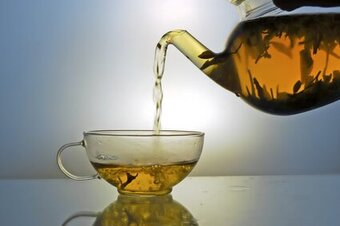

THE CEYLON TEA INDUSTRY

Introduced in 1867, Ceylon Tea has grown to be the top agriculture export in Sri Lanka and provides direct and
indirect employment to nearly 1 million people while around 4% of the country’s land area is covered in tea
plantations amounting to nearly 203,000 hectares.
Sri Lanka is an island made for tea. The country produces tea throughout the year and the total tea production is
about 340 million kilograms per annum. Sri Lanka’s tea-growing areas are mainly concentrated in the central
highlands and southern inland areas of the island.
At present, a larger portion of the country’s tea is exported as Ceylon Black Tea, while the country also
produces Ceylon Green Tea, a type developed from Assamese seedlings. Ceylon White Tea, namely silver and golden
tips is celebrated around the world for their finest flavour and are among the most expensive tea varieties in the
world.
Ceylon Tea industry maintains the highest quality in the global tea market and ISO 3720 is the minimum standard
applies for the products. The country has the capability to produce the cleanest tea in the world in terms of
minimum pesticide residues. Methyl Bromide was removed from the production process in 2012. Ceylon Tea also meets
the stringent ISO 22000 series and to the health & safety regulations stipulated by the European Community.
Sri Lankan tea planters have also entered into partnerships with Fair Trade Certification, Ethical Tea
Partnership, Rainforest Alliance, Ozone Friendly Tea, Carbon Neutral Certification, and Organic Certifications
including USDA - NOP, JAS, EU, and NASAA)